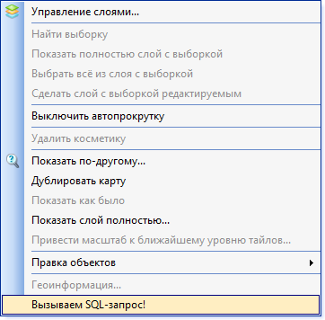
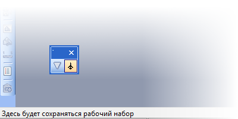

Создание меню и панелей инструментов стандартными средствами в MapInfo
Автор: Slinger© 2015
В этой заметке описано несколько тонкостей работы с ГИС MapInfo, в частности, с файлом mapinfow.mnu. Этот файл при небольшом знании и умении может быть изменён для упрощения выполнения некоторых рутинных операций и оптимизации работы в целом. О нём и пойдёт речь.
Вопросы пользовательских настроек интерфейса также затрагивались в статье «Горячие» клавиши MapInfo.
- Создание меню
- Создание контекстного меню
- Создание панелей инструментов
- Таблица «горячих клавиш» в MapInfo
- Заключение
Создание меню
При запуске MapInfo происходит считывание данных из файла mapinfow.mnu, который находится в корневой папке MapInfo. Файл, как следует из расширения, отвечает за создание меню и панелей для запуска (вызова) различных инструментов. Однако, помимо этого, в данном файле можно прописать горячие клавиши для вызова часто используемых инструментов.
Откроем файл mapinfow.mnu в любом текстовом редакторе (например, в «Блокноте»). В качестве теста взят файл от версии 12.5. Но принципиальной разницы между версиями нет никакой (в этом файле).
{kind=link}
Для людей, хотя бы немного программирующих на VB и MapBasic, содержимое файла кажется очевидным. Если вы видите данные записи первый раз, то настоятельно рекомендуется почитать хотя бы самую небольшую справку по MapBasic, чтобы упростить себе понимание дальнейшего текста. Давайте пройдёмся по основным моментам. Для примера возьмём инструмент (команду вызова) создания новой таблицы из пункта меню «Файл».
Create Menu "&Файл" ID 1 As "&Новая таблица...\tCtrl+N/W^N" HelpMsg "Создать новую таблицу." calling 101,
Create Menu – создаём меню «&Файл». Значок амперсанда (&) перед буквой означает, что при нажатии на эту букву (при нажатой клавише Alt) меню раскроется.
ID – номер меню. Необязательный атрибут; необходим для того, чтобы обращаться в дальнейшем к меню по номеру, а не по имени.
As – перечисление подменю, входящих в меню.
- &Новая таблица… – название подменю.
- \t – регулярное выражение языка C. Означает значок табуляции. Необязательный атрибут, который используется просто для того, чтобы визуально в меню выравнить все горячие клавиши.
- Ctrl+N – показывает пользователю горячие клавиши для вызова инструмента. Эта запись НЕ задаёт горячие клавиши. Это не более чем продолжение текста.
- /W – завершили текстовое отображение названия подменю. Этим слешем мы говорим, что сейчас допишем горячую клавишу вызова. "W" означает Windows. Обязательный элемент. В своё время MapInfo планировался для других операционных систем, но в итоге остался только на Windows. Кстати, буква W присутствует и на конце названия исполняемого файла запуска MapInfo.
- ∧ – обозначение нажатой клавиши Ctrl. MapInfo разрешает использовать помимо этого клавиши Alt и Shift. Их обозначение соответственно "@" и "#".
- N – непосредственно буква для вызова.
HelpMsg – сообщение помощи в нижнем левом углу при выборе или наведении мышки.
calling – вызов процедуры под ID номером 101.
, – запятая говорит о том, что это подменю завершилось, но оно не последнее и дальше пойдут объявления новых подменю.
Давайте остановимся на ID номерах вызываемых инструментов. Инструменты (процедуры) можно вызывать по техническим именам и по ID номерам. Полный список имён и номеров можно посмотреть в файле MENU.DEF. Данный файл находится в установочном пакете MapBasic, который, начиная с версии 10.0, стал бесплатным.
{kind=link}
Ну а теперь переместимся сразу в конец файла (Прим.: в конец файла mapinfow.mnu).
{kind=link}
Здесь присутствует оператор Create Menu Bar, который создаёт ПАНЕЛЬ меню, в которую мы будем добавлять кнопки меню (с аналогичными именами) с подменю. Если мы захотим создать своё меню, то нужно его сначала добавить в Create Menu Bar.
А давайте, кстати, это и сделаем. Давайте создадим своё меню с какими-нибудь подменю, вызывающими необходимые функции. Для начала обновим Create Menu Bar:
Create Menu Bar As "&Файл", "&Правка", "Програ&ммы", "Объ&екты", "&Запрос", "&Таблица", "Н&астройки", "WinSpecific", "&Окно", "Сп&равка", "Тестовое меню"
Мы объявили новое меню на панели меню под названием "Тестовое меню". Обратите внимание, что после Сп&равка теперь стоит запятая. Кроме того стоит отметить, что Create Menu Bar определяет порядок расположения меню на панели. Тестовое меню будет последним в списке.
Теперь давайте создадим непосредственно меню. Для примера его описание размещено в конце файла, но это опять же не принципиально.
Create Menu "Тестовое меню" As "Здесь будет вызываться SQL запрос\tShift+P/W#P" Calling 302, "Здесь будет сохраняться рабочий набор\tAlt+E/W@E" Calling 109
{kind=link}
При выборе первого подменю срабатывает инструмент SQL-запроса, которому присвоена «горячая клавиша» Shift+P. При выборе второго подменю срабатывает вызов инструмента сохранения рабочего набора, которому присвоена «горячая клавиша» Alt+E
Кроме того, хотелось бы рассказать о нескольких тонкостях назначения горячих клавиш.
- MapInfo воспринимает только буквы латиницы. Кириллица или иные символы будут проигнорированы.
- MapInfo не воспринимает регистр букв. Для него нет разницы, малый или большой регистр используется.
- С клавишей Alt работают не все буквы. Например, не будет работать комбинация Alt+G. Это связано с тем, что, начиная с MapInfo версии 10.0 и выше, программа не видит разницы между раскладками во время нажатия клавиши. Другими словами, буква G в латинице — это буква П в кириллице. Соответственно, вместо запуска нужного инструмента, программа при нажатии на Alt включит режим подписывания букв в меню (см. амперсанд) и откроет меню «Правка».
- На самом деле, MapInfo разрешает использовать только буквы без необходимости нажатия Ctrl, Shift или Alt. Но я бы не рекомендовал этого делать, так как в более старых версиях MapInfo это работать не будет. К тому же, если во время набора текста при создании текстового объекта нажать на установленную клавишу, то создание текстового объекта оборвётся, и будет вызвана команда.
Создание контекстного меню
Контекстное меню создаётся так же, как и обычное меню, за тем исключением, что в качестве параметра к оператору Create Menu добавляется слово Context. Взглянем для примера на часть контекстного меню окна карты:
Create Menu "MapperShortcut" ID 17 Context As "Управление с&лоями..." HelpMsg "Показать окно 'Управление Слоями'" calling 822, "(-", "Найти &выборку" HelpMsg "Выбрать объект/запись и найти выборку в текущем окне списка/карты." calling 312, "&Показать полностью слой с выборкой" HelpMsg "Показывает полностью слой, из которого сделана выборка." calling 819, "&Выбрать всё из слоя с выборкой" HelpMsg "Выбрать все записи слоя из которого сделана выборка." calling 820, "Сделать слой с выборкой &редактируемым" HelpMsg "Делает слой с выборкой редактируемым." calling 821,
Как видно, оно ничем не отличается от обычного меню и по такой же схеме можно добавить туда свои инструменты. Дописав в конце строчку:
"Вызываем SQL-запрос!" HelpMsg "Кликнув сюда, можно вызывать SQL-запрос." calling 302
Можно получить такой результат:
Создание панелей инструментов
Создание панелей инструментов происходит по той же схеме, что и создание меню. Давайте взглянем на создание пары инструментов на панели «Пенал»:
Create ButtonPad "Пенал" ID 2 As ToolButton Icon 16 Calling 1711 HelpMsg "Помещает символ (точку) на доступный слой или макет Отчета.\nТочка" ToolButton Icon 17 Calling 1712 HelpMsg "Рисует линию на доступном слое или макете Отчета.\nЛиния"
Create ButtonPad "Пенал" ID 2 As – создаёт панель инструментов под именем «Пенал», с ID номером 2.
ToolButton – тип кнопки, вызывающей инструмент. О разнице между ToolButton, ToggleButton и PushButton почитайте в учебнике MapBasic или просто в интернете.
Icon – номер или название иконки на панели. Примеры иконок (для старой версии MapInfo, в новых версиях они могли поменять свои номера) можно посмотреть здесь.
Рассмотрим иконки подробнее. Иконки можно вызывать по их техническим именам или по номерам. Полный список имён и их номеров можно увидеть в файле ICONS.DEF, который также находится в установочном пакете MapBasic.
{kind=link}
Стоит обратить внимание, что иконки разбиты по группам и разделены пустой строкой. Мы знаем их технические имена и номера, но не знаем, как они выглядят. Для этого нам необходимо воспользоваться утилитой Resource Hacker, описание которой было дано в этой статье. Если открыть файл micore.dll, зайти в папку Bitmap и перейти к ресурсу 9001, то можно увидеть, что это и есть наша первая по счёту группа.
{kind=link}
Ну а дальше нам остаётся только визуально сориентироваться с номером иконки и её изображением.
Однако, для определения номера иконки есть способ и попроще. В состав MapBasic входит утилита IconDemo. При запуске утилиты нам будут доступны все возможные иконки, их изображения и номера.
{kind=link}
А теперь давайте попробуем создать панель инструментов под наши кнопки.
Create ButtonPad "Тестовая панель инструментов" As ToolButton Icon 276 Calling 302 HelpMsg "Здесь будет вызываться SQL запрос" ToolButton Icon 315 Calling 109 HelpMsg "Здесь будет сохраняться рабочий набор"
Всё получилось. MapInfo создал панель инструментов с нашими иконками и нашими вызываемыми инструментами.
Дополнительные атрибуты оператора Create ButtonPad можно прочитать в учебнике MapBasic.
Таблица "горячих клавиш" в MapInfo
| Клавиша | ASCII-номер |
| BackSpace | %8 |
| Tab | %9 |
| Enter | %13 |
| Shift | %16 |
| Ctrl | %17 |
| Alt | %18 |
| Caps Lock | %20 |
| Space | %32 |
| Page Up | %33 |
| Page Down | %34 |
| End | %35 |
| Home | %36 |
| Left Arrow | %37 |
| Up Arrow | %38 |
| Right Arrow | %39 |
| Down Arrow | %40 |
| 0-9 | %48-%57 |
| A-Z | %65-%90 |
| Win (левая) | %91 |
| Win (правая) | %92 |
| NumPad 0-9 | %96-%105 |
| NumPad * | %106 |
| NumPad + | %107 |
| NumPad - | %109 |
| NumPad . Del | %110 |
| NumPad / | %111 |
| F1 - F12 | %112-%123 |
| NumLock | %144 |
| ScrollLock | %145 |
В этом списке приведены ASCII номера, по которым можно вызвать нужный символ. При этом это не обязательно должна быть буква, а можно ,например, использовать комбинацию клавиш Shift + ScrollLock или Alt + Win. При этом записывать ASCII номера необходимо для любых символов за исключением букв (а возможно и цифр). Другими словами выражение:
"&Новая таблица...\tCtrl+A/W∧A
равнозначно выражению:
"&Новая таблица...\tCtrl+A/W&%65
Как было сказано ранее, буква A в верхнем регистре имеет ASCII-номер 65. Соответственно, чтобы использовать комбинацию клавиш Alt + NumLock, нужно записать так:
"&Новая таблица...\tAlt+NumLock/W@%144
При всём при этом у MapInfo старше версии 10.0 есть одна особенность. Предположим, была использована запись:
"&Новая таблица.../W@%145
Мы не указали пользователю, какие клавиши нужно нажимать, чтобы вызвать инструмент, но объявили их системе. И MapInfo пропишет их автоматически:
{kind=link}
В конце необходимо отметить ещё несколько моментов использования «горячих клавиш»:
- Не все специальные символы работают с клавишей Ctrl. Например, Ctrl + ScrollLock и Ctrl + NumLock не работают.
- Отдельными номерами обозначены клавиши Ctrl, Shift и Alt (номера 17, 16 и 18, соответственно). Но использовать комбинации клавиш Ctrl + Shift не получится. Зато при назначении клавиш Shift + Shift получится вызвать инструмент однократным нажатием клавиши Shift.
- Клавиши цифровой клавиатуры (NumPad) могут работать и при выключенном NumLock. И, как уже было сказано ранее, клавиши можно использовать без необходимости нажатия Shift, Alt или Ctrl, что довольно удобно.
Заключение
В статье было показано создание элементов меню и инструментальных панелей, а также использование так называемых «горячих клавиш» для упрощения вызова инструментов. Файл .MNU фактически представляет из себя определённый список операторов языка MapBasic, который можно настраивать по собственному вкусу и даже добавлять команды, которые отсутствуют в нём изначально. Например, через .MNU можно запустить приложение mbx, используя оператор Start Application. И в зависимости от того, куда мы определим строчку запуска, приложение запустится до объявления меню и инструментов, после него или вообще в середине. Но это уже отдельная тема.
На этом всё, успешной работы!
Оригинал:
GIS-Lab: Создание меню и панелей инструментов стандартными средствами в MapInfo.
Обсуждение на форуме:
Форумы GIS-Lab.info: Просмотр темы - Работа с горячими клавишами в MapInfo.
Примечание:
Все иллюстрации оригинальной статьи заменены на аналогичные.